Content
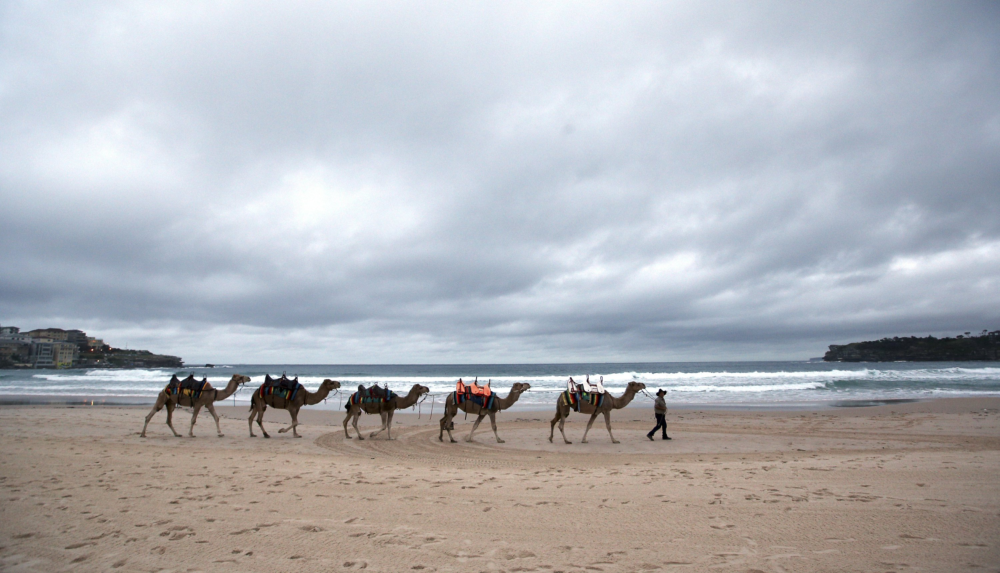
(1) FILE - Camels are led along Bondi Beach as part of Bondi Winter Magic Festival in Sydney, Australia, Sunday, June 19, 2016. The festival runs from June 19 until July 31. (Rob Griffith)
(2) FILE - In this June 13, 2009 file photo, children play at a resort beach in Ngerkebesang, Palau. In an attempt to protect the coral reefs that divers so admire they have dubbed them the underwater Serengeti, the Pacific nation of Palau will soon ban many types of sunscreen. President Tommy Remengesau Jr. Oct. 25, 2018, signed legislation that bans "reef-toxic " sunscreen from 2020. Banned sunscreens will be confiscated from tourists who carry them into the country, and merchants selling the banned products will be fined up to $1,000. (Itsuo Inouye, File)
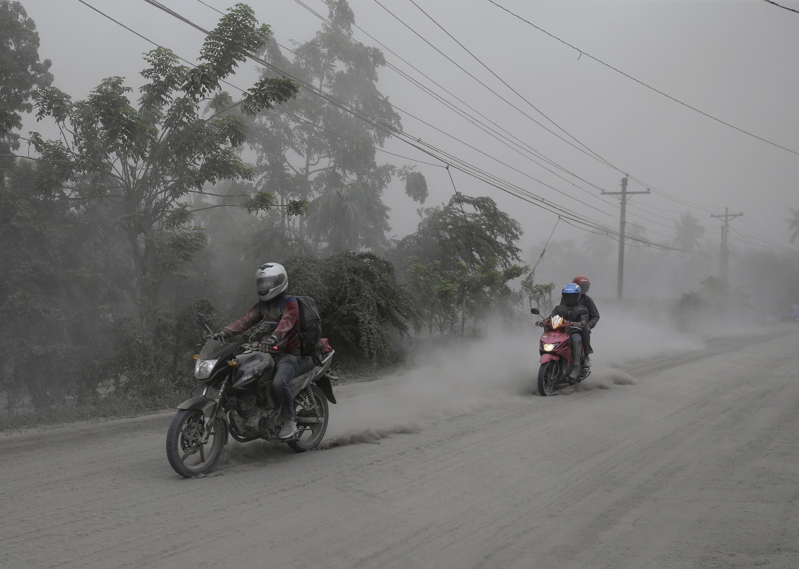
(3) Motorcycles ride along an ash covered road as they evacuate to safer grounds as Taal volcano in Lemery, Batangas, southern Philippines on Monday, Jan. 13, 2020. Red-hot lava gushed out of a volcano near the Philippine capital on Monday, as thousands of people fled the area through heavy ash. Experts warned that the eruption could get worse and plans were being made to evacuate hundreds of thousands. (Aaron Favila)
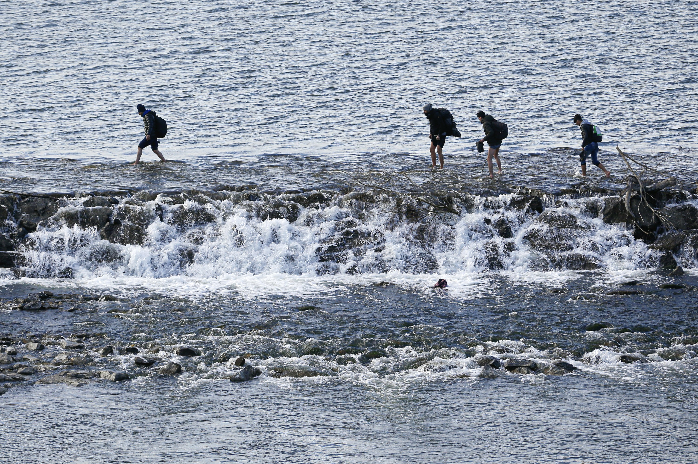
(4) Migrants cross the Maritsa river on their way to the Greek border, near Edirne, Turkey, Tuesday, March. 3, 2020. Migrants and refugees hoping to enter Greece from Turkey appeared to be fanning out across a broader swathe of the roughly 200-kilometer-long land border Tuesday, maintaining pressure on the frontier after Ankara declared its borders with the European Union open. (Darko Bandic)
(5) Icelandic horses huddle together during a snow storm at a stud farm in Wehrheim, Germany, near Frankfurt on Thursday, Feb. 27, 2020. (Michael Probst)
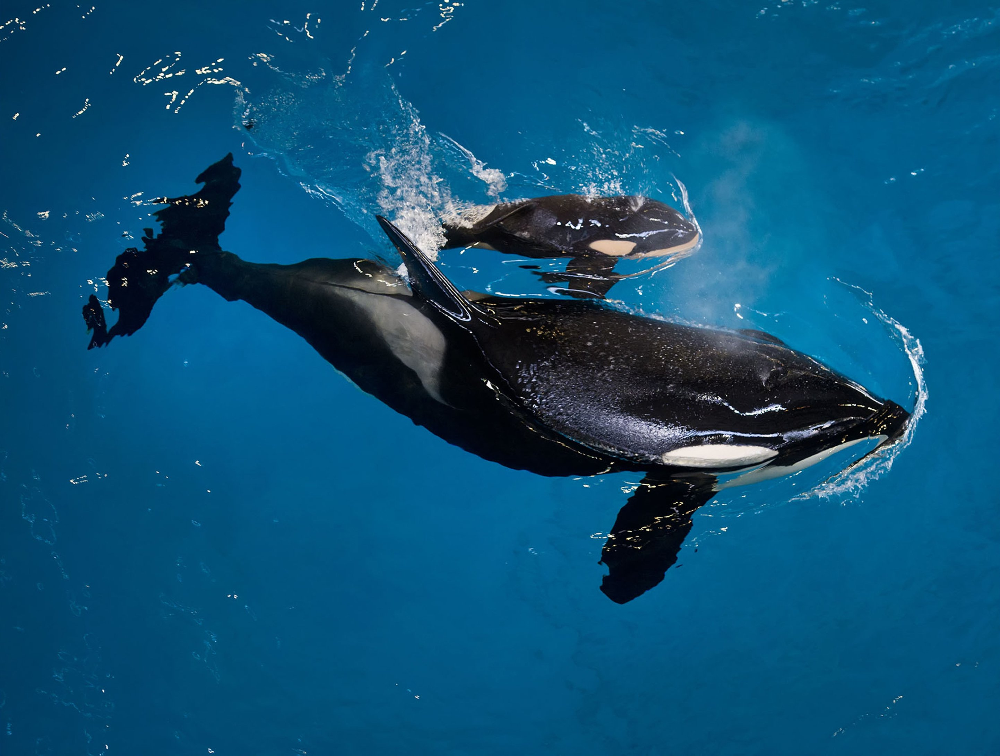
(6) In this image provided by SeaWorld Parks & Entertainment orca Takara helps guide her newborn to the water's surface at SeaWorld San Antonio, Wednesday, April 19, 2017, in San Antonio. The company based in Orlando, Fla., announced the birth Wednesday. (Chris Gotshall SeaWorld Parks & Entertainment)
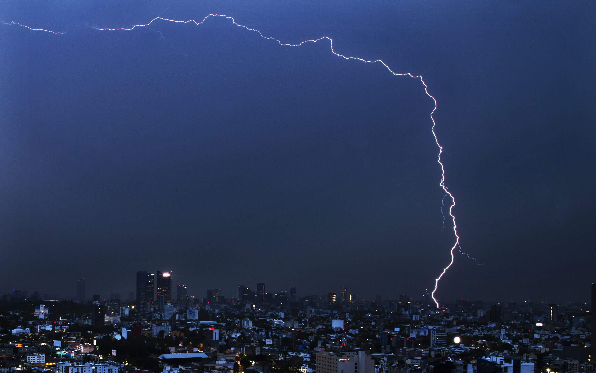
(7) A bolt of lightning strikes during an early morning storm in Mexico City, Monday, June 22, 2020. (Marco Ugarte)
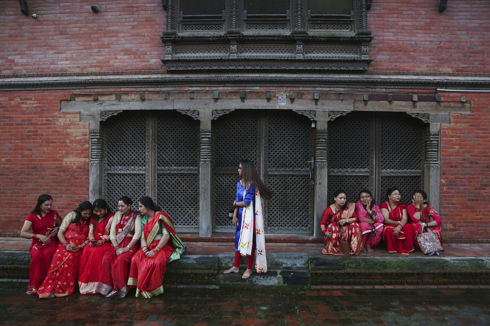
(8) In this Monday, Sept. 2, 2019, file photo, Nepalese Hindu women take rest at the Pashupatinath temple during Teej festival celebrations in Kathmandu, Nepal. During this festival, Hindu women observe a day-long fast and pray for their husbands and for a happy married life. Those who are unmarried pray for a good husband. (Niranjan Shrestha, File)
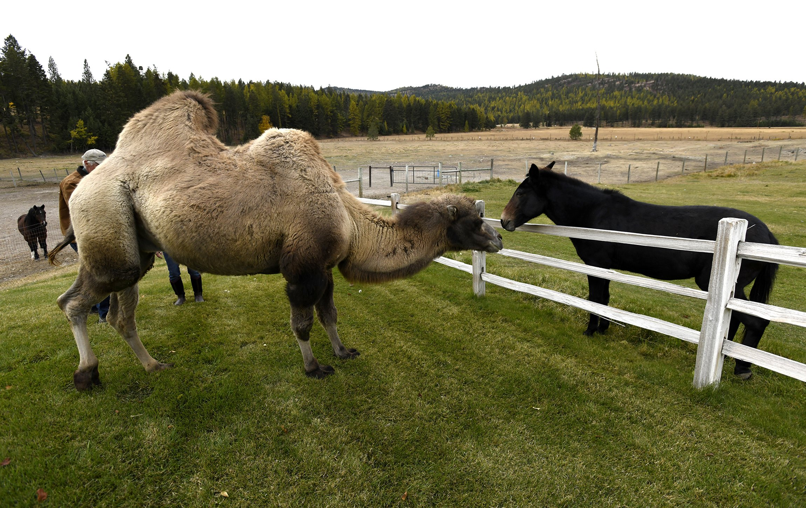
(9) In this Wednesday, Oct. 10, 2018 photo, Carlos and one of the ranch's mules greet each other over a fence at the Spring Brook Ranch in Kalispell, Mont. Carol Bibler, who along with her husband Jim Watson owns the ranch, said that when Carlos first arrived, the horses and mules were terrified and ran to the far side of the paddock. (TomBauer The Missoulian)
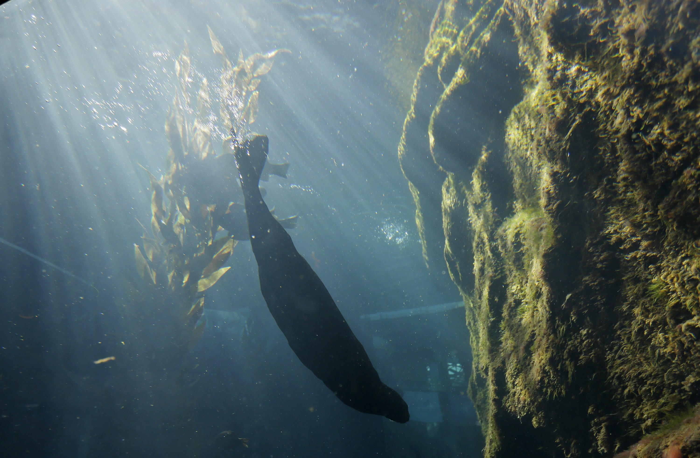
(10) In this photo taken Monday, March 26, 2018, a sea otter dives to the bottom of its exhibit at the Monterey Bay Aquarium in Monterey, Calif. California sea otters, once thought wiped out by the fur trade, are booming again in a federally-protected enclave of Northern California coast. But outside that sanctuary, a new study finds, a chain of unintended bad consequences has followed man's removal of otters as a top predator of the sea, and is preventing the furry creature's return to its former range from Baja California north. (Eric Risberg)
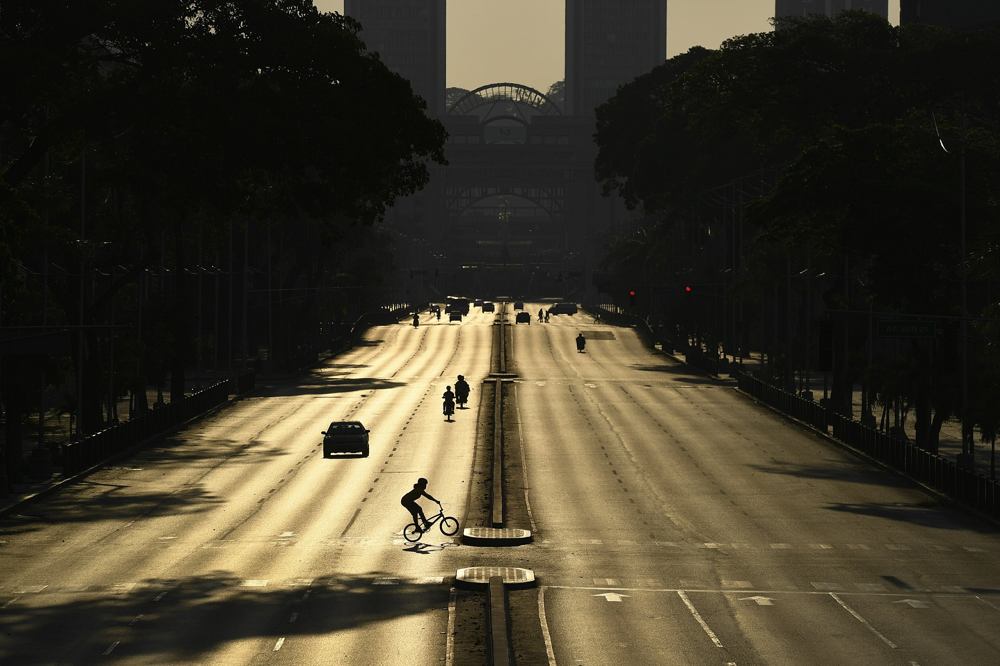
(11) Venezuelan Olympic medalist Stefany Hernandez, a BMX racing cyclist, rides across an empty Bolivar Avenue amid the new coronavirus pandemic in Caracas, Venezuela, Saturday, April 25, 2020. Despite a quarantine to curb the spread of COVID-19, Hernandez trains three times a week in hopes of qualifying for the 2021 Tokyo Summer Olympics. (Matias Delacroix)
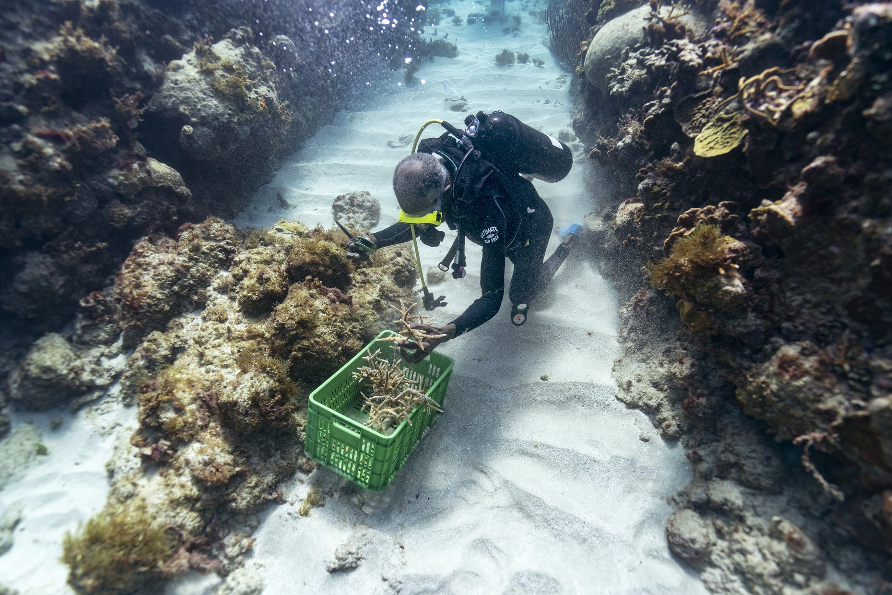
(12) Diver Everton Simpson grabs a handful of staghorn, harvested from a coral nursery, to be planted inside the the White River Fish Sanctuary Tuesday, Feb. 12, 2019, in Ocho Rios, Jamaica. When each stub grows to about the size of a human hand, Simpson collects them in his crate to individually "transplant " onto a reef, a process akin to planting each blade of grass in a lawn separately. Even fast-growing coral species add just a few inches a year. And it's not possible to simply scatter seeds. (David J. Phillip)
(13) This image provided by NASA shows the planet Mars. A group of NASA-funded researchers are entering an isolated geodesic dome perched on a remote Hawaii volcano to study human behavior for future long-term space exploration, including future trips to Mars. The six crew members entered a dome structure on the Big Island's Mauna Loa Thursday, Jan. 19, 2017, and will spend eight months together in the research facility without physical contact with any other human beings. (NASA)
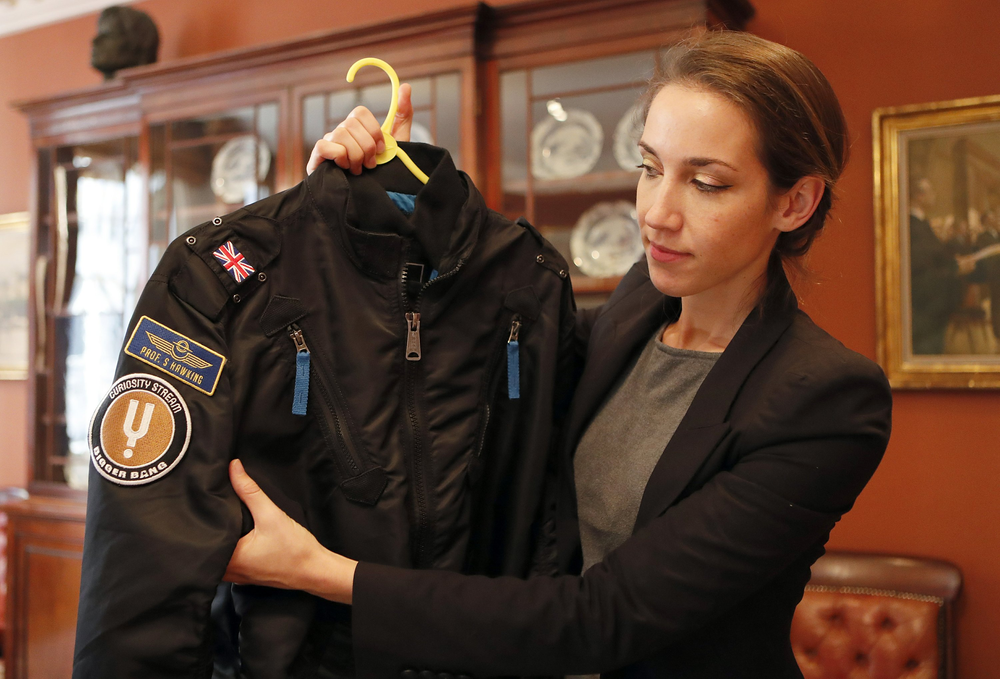
(14) A bomber jacket given to Stephen Hawking is one of the personal and academic possessions of Stephen Hawking at the auction house Christies in London, Friday, Oct. 19, 2018. The online auction announced Monday Oct. 22, 2018, by auctioneer Christie’s features 22 items from Hawking, including his doctoral thesis on the origins of the universe, with the sale scheduled for 31 October and 8 November. (Frank Augstein)
Posted on 2020-07-05 09:50:27